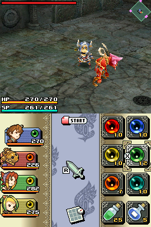
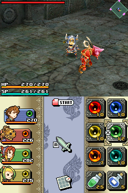

Final Fantasy Crystal Chronicles: Ring of Fates

Not Complete on 2023-02-10
3 / 5
Release Date: Mar 11, 2008
Meta Score: 77
Screenshots
 

Notes
This initially started off fun but I fell off it hard and couldn't bring myself to come back and finish it. Reminds me of Children of Mana, better in some ways but worse in others.
The game is really inconsistently structured with times where you can't go to the town for ages or are stuck with no way to return to the world map.
It's clearly mostly designed for coop and in single player you're saddled with the AI which is just really pathetic most of the time. Since the single character you're controlling dies fairly quickly to boss attacks you have the AI characters as back ups... but because the AI is so bad they usually all end up dead unless you baby sit them. A recipe for frustration.
This game but with a proper single player/character mode could be quite good.